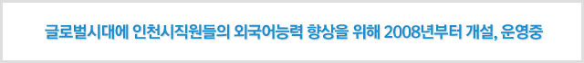

집합교육

> 교육지원 > 교육안내 >
전문사이버교육
- 집합교육
- 전문사이버교육
- 외부사이버교육
외부사이버교육

- 교육과정
- 영어, 일본어, 중국어
- 교육대상
- 시,군구 및 공사,공단(희망자)
- 교육기간
- 1년(연간운영)
- 학습방법
- 신청자 명단 인재개발원에 제출 -> 위탁기관 일괄등록 -> 사이버 어학센터 로그인 -> 수강신청(수준별 테스트 병행) -> 학습진행
- 학습시간
- 개인학습으로 년간 최대 25시간까지 인정
- 운영업체
- (주)윈글리쉬 사이트 주소 클릭시 이동
- 수료통보
- 사이버교육 과정종료 후 10일 이내에 교육생 소속기관으로 통보한다